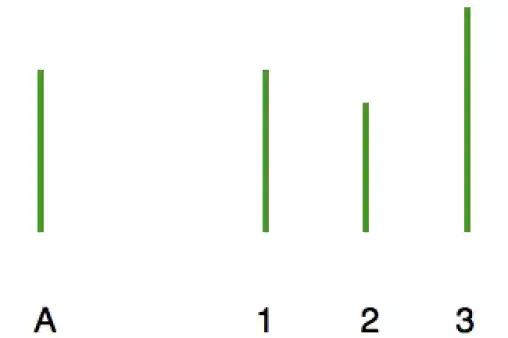

L’effet Asch
Une étude très connue, de Solomon Asch, démontre à quel point le conformisme impacte nos vies. Faisant passer un test de vision à un groupe d’étudiants dont des complices et un unique sujet naïf, l’étude à pour but de voir comment ce dernier va agir face au comportement des autres participants.
La consigne est simple : une ligne modèle est donnée et il faut, parmi les trois choix proposés, déterminer quelle ligne est identique, puis laquelle est la plus longue ou la plus courte. Les complices donnent tous une mauvaise réponse, et le sujet naïf répond toujours en avant-dernière position.
Lorsque les réponses sont différentes, le sujet répond sans problème, tandis que lorsqu’il y a unanimité de mauvaises réponses de la part des complices, le sujet a tendance à se conformer au reste du groupe, même s’il est évident à ses yeux que c’est faux. Certains allant même jusqu’à croire qu’ils ont un problème de vue.
La peur du regard des autres
Souvent inconsciemment, les gens se sentent obligés de faire quelque chose en fonction des autres. Si leur jugement entre en conflit avec la bienséance, ils s’effacent, pour se conformer aux attentes de la société. Ceux qui n’ont pas confiance en eux sont d’autant plus sensibles à cela, ils ont donc plus tendance à se conformer, n’assumant pas qui ils sont réellement.
Je regrette qu’il n’y ait pas plus de « facteur Cheval », de Eléonore Herreinstein, ou de professeur Keating. Parce que non seulement, je ne veux pas entrer dans ce conformisme, car je constate que beaucoup de personnes sont malheureuses. Elles ne se sont pas épanouies dans leur vie.
Je trouve donc qu’il est regrettable que tant de personnes se laissent modeler par le conformisme, parce que tant de choses évoluent avec le temps. Ce qui était mal vu au temps du facteur Cheval serait aujourd’hui l’œuvre d’un génie. Beaucoup craignent de s’affirmer alors que s’ils réalisaient leurs rêves ils passeraient peut-être pour des artistes demain.